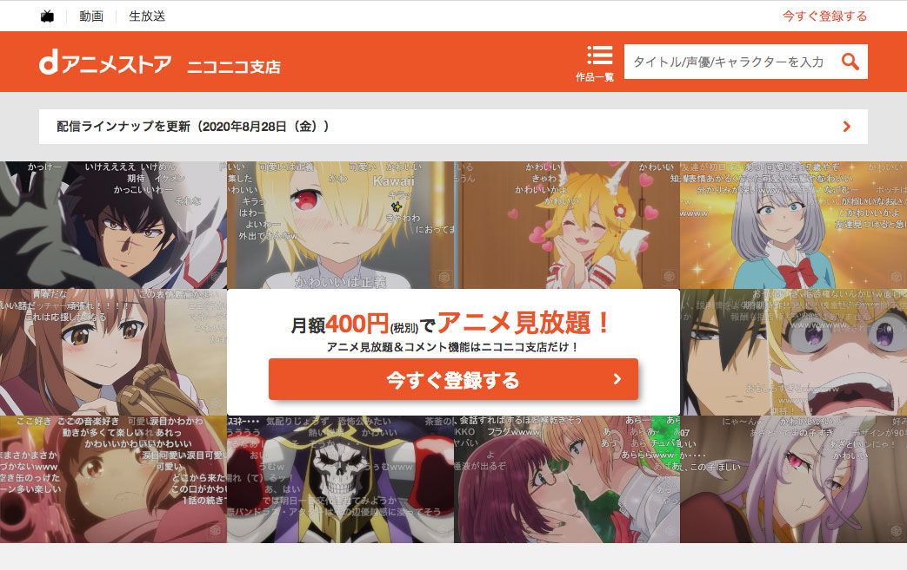
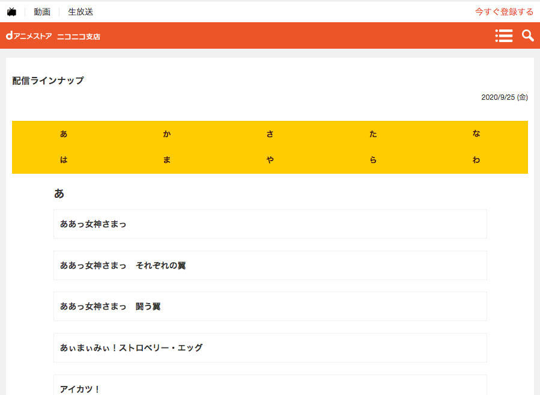
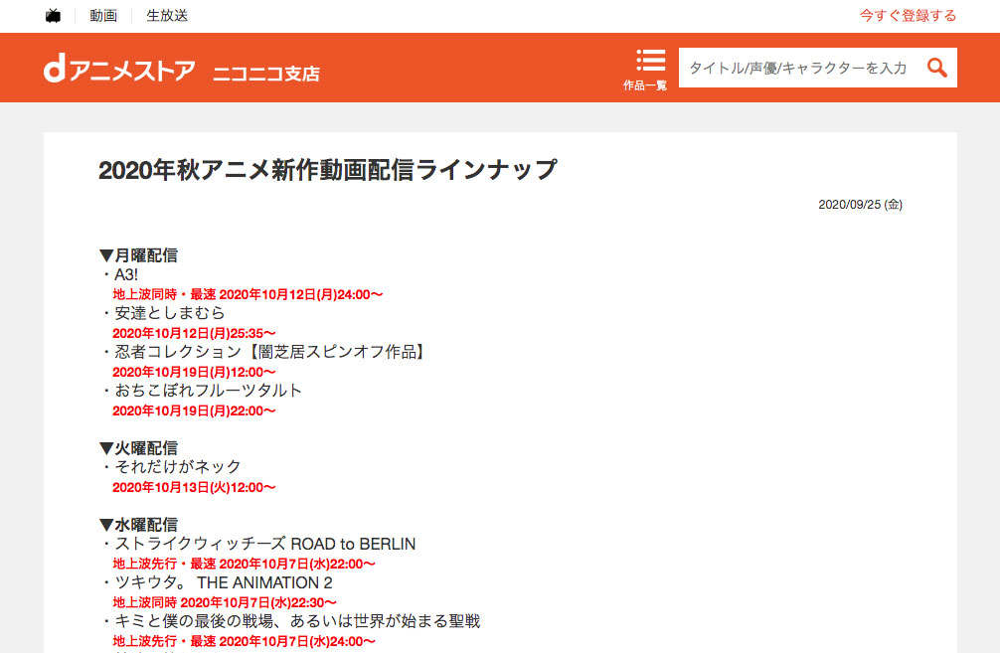

<!DOCTYPE html>
<html lang="en" dir="ltr">
  <head>
    <meta charset="utf-8">
    <meta name="viewport" content="width=device-width,intial-scale=1.0">
    <title>Port Folio_Work03</title>
    <link rel="stylesheet" href="../css/ress.css">
    <link rel="stylesheet" href="../css/style.css">
    <link rel="stylesheet" href="css/style.css">
    <link href="https://fonts.googleapis.com/css2?family=Lora:ital,wght@1,500&display=swap" rel="stylesheet">
    <script src="https://ajax.googleapis.com/ajax/libs/jquery/3.4.1/jquery.min.js"></script>
  </head>
  <body>
    <div class="allWraper clearfix">
      <header class="equal-height">
        <div class="headerContents">
          <h1><a href="../index.html">PortFolio</a></h1>
          <nav>
            <ul>
              <li><a href ="../profile.html">自己紹介</a></li>
              <li><a href ="../index.html">業務履歴</a></li>
              <li><a href ="../address.html">連絡先</a></li>
            </ul>
          </nav>
        </div>
      </header>
      <div class="sectionContainer equal-height">
        <ul class="pankuzuList">
          <li>業務履歴</li>
          <li>業務制作物</li>
          <li>dアニメストア ニコニコ支店</li>
        </ul>
        <section>
          <article>
            <div class="contents">
              <figcaption>
                <h2 class="subTitle"><b>dアニメストア ニコニコ支店</b></h2>
                <p class="urlAddress"><a href="https://site.nicovideo.jp/danime/?ref=nicotop_danime" target="_blank">https://site.nicovideo.jp/danime/?ref=nicotop_danime</a></p>
                <p>dアニメストアの配信動画チェック、dアニメストア ニコニコ支店のサイト運用（ランキングの修正や、新作の掲載、放映するアニメの動作チェック）を担当しました。</p>
                <dl class="mt10">
                  <dt>制作時期</dt>
                  <dd>株式会社ドコモ・アニメストア</dd>
                  <dt>担当箇所</dt>
                  <dd>
                    <p>以下内容を担当しました。</p>
                    <ol>
                      <li>配信タイトルの視聴確認</li>
                      <li>支店のHPの更新（お知らせ・放映タイトル一覧の更新・特集の更新）</li>
                      <li>動画の差し替え</li>
                    </ol>
                  </dd>
                </dl>
                <dl>
                  <dt>使用ツール</dt>
                  <dd>ニコニコチャンネルツール,Illustrator,Photoshop,Dreamweaver,Excel,PowerPoint</dd>
                </dl>
                <dl>
                  <dt>制作時間</dt>
                  <dd>
                    <p>担当箇所と連動で記載しています。</p>
                    <ol>
                      <li>1タイトル（約1~50話）：15分〜1時間、週約2〜14件確認</li>
                      <li>1件：約15分程、週１〜２回</li>
                      <li>1タイトル：約30~1時間半程、月1〜3回</li>
                    </ol>
                  </dd>
                </dl>
              </figcaption>
              <div class="figure_col">
                <figure>
                  <p class="caption">トップページ（上部お知らせ欄担当）</p>
                  
                </figure>
                <figure>
                  <p class="caption">作品検索ページ（ページ制作・更新担当）</p>
                  
                </figure>
                <figure>
                  <p class="caption">お知らせページ（更新担当）</p>
                  
                </figure>
                <figure>
                  <p class="caption">特集欄（更新担当）</p>
                  
                </figure>
              </div>
              <!-- figure_colEnd-->
            </div>
          </article>
        </section>
      </div>
      <div class="pagetop">
        <p><a href="#pagetop">ページトップへ戻る</a></p>
      </div>
      <footer>
        <p>&copy;PortFolio</p>
      </footer>
      <!-- allWraperEnd-->
    </div>
  </body>
  <script type="text/javascript" src="../js/base.js"></script>
</html>
